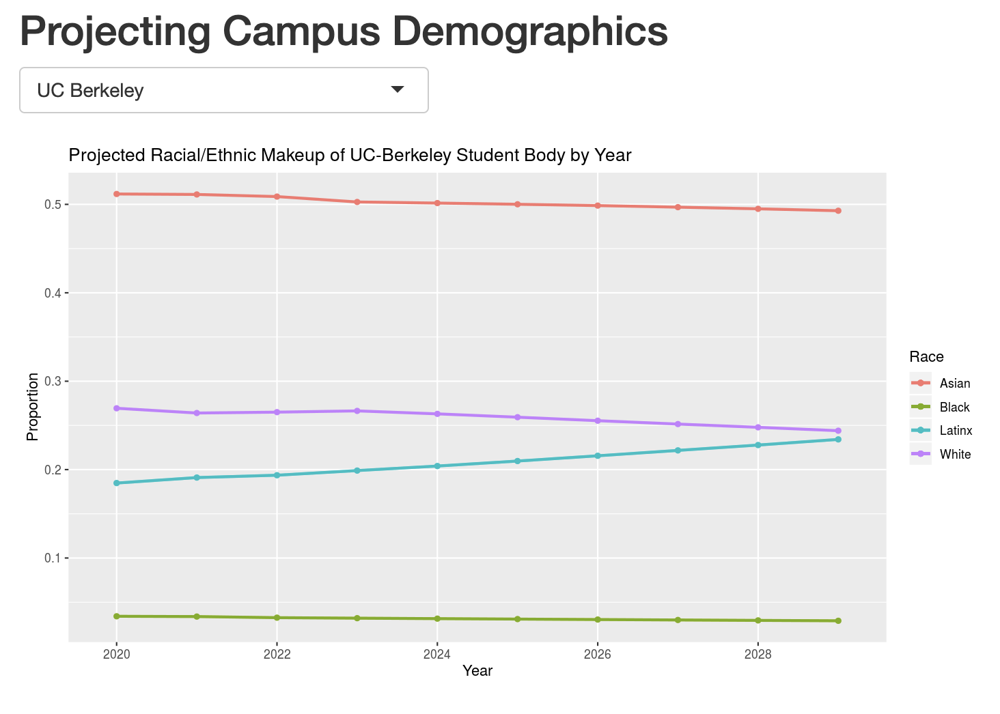
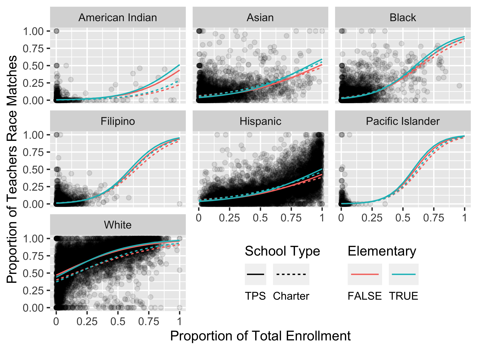
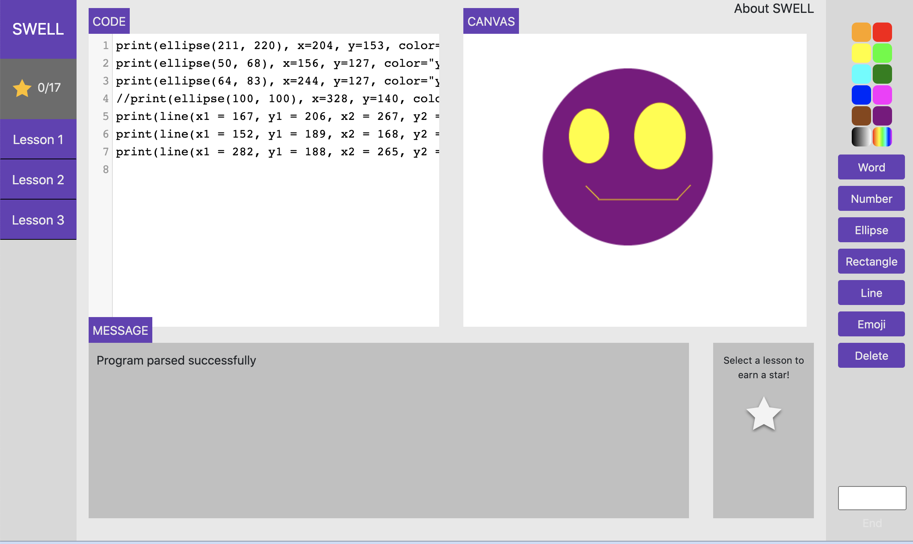
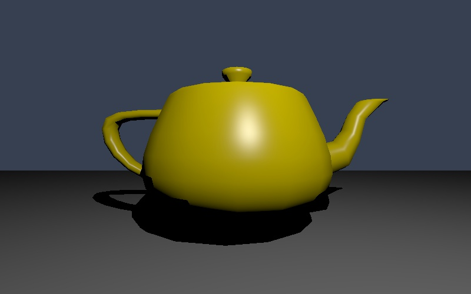

Affirmative action, critical mass, and a predictive model of undergraduate student body demographics
Co-author in a study to create a predictive model of racial/ethnic demographics in undergraduate student bodies at public universities to measure effect and efficacy of affirmative action admissions policies. Paper published in PLOS One in May 2021 can be found here. The accompanying webapp, which allows users to manipulate admissions statistics for each racial/ethnic group and note the outcome on campus demographics and critical mass, can be found here.

Modeling Teacher-Student Race Match in California Public Schools

Completed an honors thesis constructing a new data set for same-race teacher-student exposure in California public schools; defined a metric to measure race match with high granularity; and explored patterns across racial-ethnic groups, school types, and student enrollment. I concluded increased proportion of enrolled students to be statistically associated with race match across seven racial-ethnic groups. Trends in race match across school sector vary with racial-ethnic group, as do expected number of same race teachers. A code sample from the project can be found here.
SWELL
The SWELL Entry-Level Learning Language (SWELL) is a programming language education research project, lead by Prof. Daniel Barowy in the Williams College Department of Computer Science. The interactive canvas tool can be found here.

WSOmegle
Co-developer on a randomized chatting app, which pairs two users randomly via iMessage, similar to the popular chatting app Omegle. Built as the final project for a software development class, we conceptualized this project as Williams students were sent home due to COVID-19 with the goal of connecting Williams Students (WS) with one another virtually in new ways.
Parallelized Ray Caster

Implemented ray casting algorithm [1] in parallel. Using NVIDIA's CUDA, tested varoius block sizes and use of dynamic and static memory allocation. Compared optimizations using speed tests, and culminated in final paper.
G Flat
Programming language for computation of music, specifically notes, chords, and frequencies. Designed in two-person team, and implemented in F#, with WAVE file and sinusoidal graph representation for visual and audial output.
[1] John F. Hughes Andries van Dam, James D. Fo- ley and Steven K. Feiner. Computer Graphics: Principles and Practice. 1.00 edition, 1982.